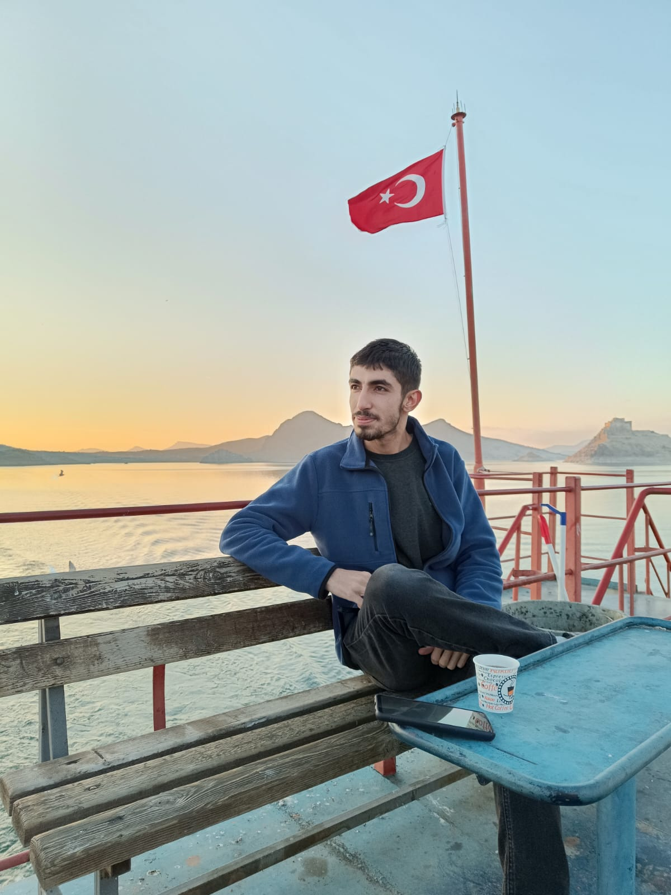

Hakkımızda
Eleştir-Geliştir Nedir?
Eleştir-Geliştir, yardımlaşma ve bilgi paylaşımına dayalı bir sosyal platformdur. Kullanıcılar fikirlerini paylaşır, diğer kullanıcılar bu fikirlere eleştir ve geliştirici geri bildirimler verir.
Amacımız, bireysel gelişim ve kolektif bilinci güçlendirmektir. Burada her fikir değerlidir, her eleştiri gelişmenin bir parçasıdır.
Geliştirici Hakkında

Cihan Gaspak
Fırat Üniversitesi Yazılım Mühendisliği 3. sınıf öğrencisi
Cihan, teknolojiye ve yazılıma olan ilgisini erken yaşta keşfetmiş ve bu alandaki becerilerini her geçen gün geliştiren bir yazılım geliştiricisidir. Gerek bireysel projelerde gerekse takım çalışmalarında sorumluluk almayı seven, kullanıcı deneyimini ön planda tutan bir yaklaşıma sahiptir.
Aynı zamanda tarihe olan tutkusu ve insanlara fayda sağlama arzusu, "Eleştir-Geliştir" platformunun temelini oluşturmuştur. Yardımlaşarak gelişmeye inanan bir zihniyetle, fikirlerin özgürce paylaşıldığı ve geliştirildiği dijital bir ortam kurmayı hedeflemiştir.
Boş zamanlarında yeni teknolojileri araştırmak, topluluklardan ilham almak ve gerçek dünyadaki problemlere çözüm üretecek fikirler üzerine çalışmak en büyük tutkularındandır.
Fırat Üniversitesi Yazılım Mühendisliği 3. sınıf öğrencisi
Cihan, teknolojiye ve yazılıma olan ilgisini erken yaşta keşfetmiş ve bu alandaki becerilerini her geçen gün geliştiren bir yazılım geliştiricisidir. Gerek bireysel projelerde gerekse takım çalışmalarında sorumluluk almayı seven, kullanıcı deneyimini ön planda tutan bir yaklaşıma sahiptir.
Aynı zamanda tarihe olan tutkusu ve insanlara fayda sağlama arzusu, "Eleştir-Geliştir" platformunun temelini oluşturmuştur. Yardımlaşarak gelişmeye inanan bir zihniyetle, fikirlerin özgürce paylaşıldığı ve geliştirildiği dijital bir ortam kurmayı hedeflemiştir.
Boş zamanlarında yeni teknolojileri araştırmak, topluluklardan ilham almak ve gerçek dünyadaki problemlere çözüm üretecek fikirler üzerine çalışmak en büyük tutkularındandır.